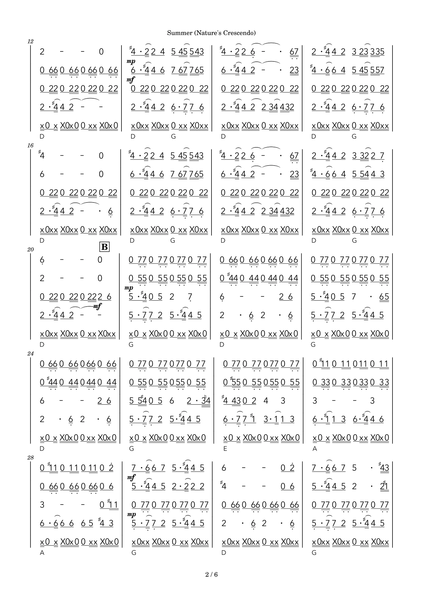

AN OPEN HANDBOOK FOR HARMONICA ARRANGING
一起寫出
看得懂、
吹得出的口琴譜。
從樂句與配器，到簡譜的每一個拍點。
讓演奏者與 agent，有一套共同的編譜語言。
協作規範 0.1.0 · 免費閱讀與下載
下載 agent skill ↗Summer · 五重奏簡譜2 / 6

為什麼需要一份編譜協作手冊？
先讓音樂完整
依樂句接棒，保留主旋律、副旋律與律動，讓每一部都有清楚的角色。
讓拍點看得見
每拍分開的減時線、清楚的升降記號，以及不互相打架的力度和弦。
和你的 agent 一起做
同一份開放手冊，產生網站、協作文件與 skill，讓經驗能持續累積。
MADE THROUGH COLLABORATION
從實際完成的譜，看見細節。
Summer (Nature’s Crescendo) · 固定 C 簡譜。點選圖片可開啟清晰譜面。
Music by Eric Barone / ConcernedApe · Arranged by skyhong.tw
HANDBOOK
讓每次修正，都有跡可循。
START A NEW PIECE
下一首，從這裡開始。
填寫參考、編制與程度，把需求和文件包一起交給你的 agent。所有操作在瀏覽器內完成，不上傳音訊或樂譜。
目前提供協作規範與需求產生器。
通用轉錄、MuseScore 編譜引擎與自動渲染檢查仍待開發。這裡不會直接生成樂譜。
通用轉錄、MuseScore 編譜引擎與自動渲染檢查仍待開發。這裡不會直接生成樂譜。
BUILT WITH THE COMMUNITY
把經驗留下來，
讓下一份譜更好。
補上實際案例、改善規則，或一起開發可靠的 MuseScore 工具。
從一個可重現的小問題開始，讓演奏經驗變成大家能使用的知識。
演奏者
回報難吹的樂句
與不易閱讀的記譜
編曲者
分享配器方式
與不同程度的演奏需求
開發者
改善 agent 工作流程
與製譜、渲染檢查工具
目前為可開源的初版，公開 GitHub 倉庫尚未建立。